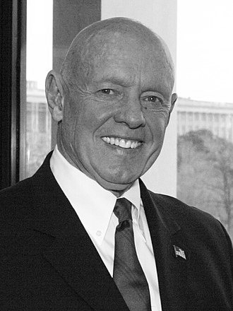

Stephen R. Covey
1932 – 2012
Author of #1 Most Influential Business Book of the Twentieth Century
Recognized as one of Time magazine’s twenty-five most influential Americans, Stephen R. Covey (1932–2012) was an internationally respected leadership authority, family expert, teacher, organizational consultant, and author. His books have sold more than twenty-five million copies in thirty-eight languages, and The 7 Habits of Highly Effective People was named the #1 Most Influential Business Book of the Twentieth Century.

Picture of Stephen R. Covey from Wikipedia
The following list is a time line of Stephen R. Covey Life
- 1932 - born in Salt Lake City, Utah, US.
- 1952 - graduated from the University of Utah with a Bachelor of Science degree in business administration.
- 1962 - obtained MBA from Harvard University and became became president of the Irish Mission of the church.
- 1970 - he authored the book, "Spiritual Roots of Human Relations".
- 1982 - he came out with the book "The Divine Center".
- 1984 - he resigned from his teaching position at Brigham Young University in order to establish a training company named, "Stephen R. Covey and Associates".
- 1987 - "Stephen R. Covey and Associates" was renamed "Covey Leadership Center".
- 1989 - he came up with the book, "Principle-centered Leadership".
- 1989 - he published his best-seller, "The Seven Habits of Highly Effective People".
- 1994 - he came up with his next publication "First Things First".
- 1994 - he was the recipient of the International Entrepreneur of the Year Award.
- 1996 - "Time" magazine named him as one of the "25 most influential Americans".
- 1998 - he was awarded The Sikh’s International Man of Peace Award.
- 2003 - he received the "Fatherhood Award".
- 2004 - he published the book, "The 8th Habit: From Effectiveness to Greatness".
- 2004 - he was the recipient of the "Golden Gavel" award.
- 2008 - he launched the "Stephen Covey's Online Community".
- 2009 - he was inducted into the Utah Valley Entrepreneurial Forum Hall of Fame.
- 2010 - he authored the article, "Our Children and the Crisis in Education".
- 2012 - at the age of 79 he died, in Idaho Falls, Idaho, US.